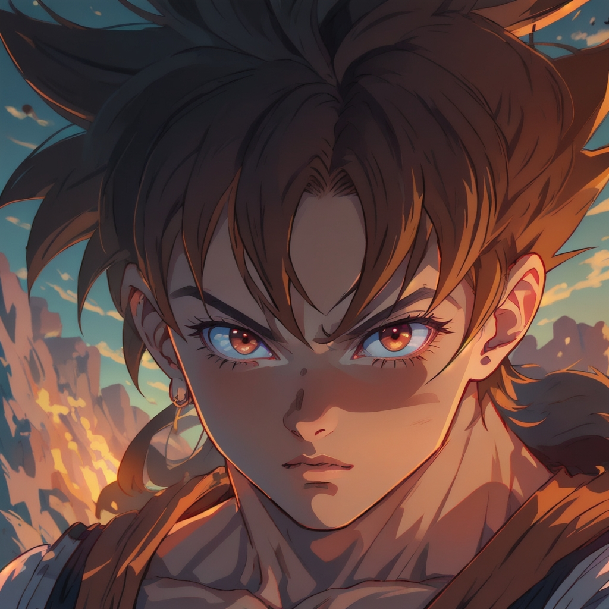

5 Best AI-characters Websites
In today's rapidly evolving digital landscape, AI-driven technologies are revolutionizing how we interact with fictional characters, especially in the anime realm. The increasing sophistication of AI anime character chatbots is opening up new possibilities for fans and creators alike, blending advanced customization, storytelling, and interactivity. This essay delves into the top five AI anime character chatbots and platforms, highlighting their unique features and capabilities.
Character.ai stands out as a versatile platform where creativity knows no bounds. It allows users to create unlimited chatbots and engage in conversations with AI characters inspired by anime, TV shows, books, and more. The platform's user-friendly interface ensures a seamless experience, whether you're using Firefox, Chrome, or Safari.
The free version is packed with features, making it accessible to a wide audience. For those seeking even more, the Character.ai+ plan, available for $9.99 per month, offers enhanced functionalities. This combination of accessibility and advanced features makes Character.ai a popular choice among AI enthusiasts and casual users alike.
GPTChatlyy's character generator is a powerhouse of customization, offering an unparalleled level of detail. Users can meticulously craft their anime characters, tailoring physical traits such as hair and eye color, clothing, and personal attributes like personality and special skills. This depth of customization enables the creation of truly unique and personalized characters.
Beyond character creation, GPTChatly excels in narrative development. The platform guides users through the intricate process of story crafting, from inception to climax and resolution. This ensures that every story arc is engaging and cohesive. Additionally, the image generation feature allows users to visualize their characters and scenes, adding a visual dimension to their narratives.
GPTChatly's flexibility in supporting various genres—from anime and manga to fantasy and NSFW romance—further enhances its appeal. Users can imbue their characters with a wide range of special skills and personality traits, ensuring that each character is as complex and compelling as the stories they inhabit. Remarkably, all these features are offered for free, albeit with generous usage limitations.
In addition to character creation, GPTchatly offers language tutoring and practice using ChatGPT technology.Realchar.ai focuses on community interaction and customization. Users can design their AI's appearance and create shareable AI character chatbots. The platform's voice-to-text support adds an immersive layer to the interaction, making conversations feel more natural and engaging.
One of Realchar.ai's standout features is the ability to interact with AI characters created by other community members. This fosters a rich ecosystem of diverse characters and narratives, encouraging users to explore and engage with a variety of personalities and stories. The platform's accessibility across web browsers and its free-to-use model make it an attractive option for those looking to dive into the world of AI chatbots without financial commitment.
Myanima.ai offers a unique approach by allowing users to create and customize a virtual AI character known as an Anima. These virtual companions can engage in six different games, providing an interactive and entertaining experience. The platform's ability to generate long, detailed responses from the Anima enhances the sense of realism and engagement.
Supporting Android, iOS, and web browsers, Myanima.ai ensures that users can interact with their Anima across multiple devices. While the free account offers limited features, paid plans starting at $9.99 per month unlock additional functionalities, catering to users who seek a more in-depth and immersive experience with their virtual companions.
Fanchat.me carves out a niche by enabling users to have conversations with celebrity AI chatbots. This unique offering allows fans to engage with AI representations of their favorite celebrities, making for a novel and entertaining experience. The platform provides quick, detailed responses, ensuring that interactions are both engaging and satisfying.
Accessible via web browsers and free to use, Fanchat.me appeals to those who enjoy the idea of chatting with AI versions of celebrities without any cost. Its straightforward approach and specialized focus make it a distinctive option in the landscape of AI character chatbots.
The realm of AI anime character chatbots is rich with innovation and creativity. Platforms like Character.ai, GPTChatly, Realchar.ai, Myanima.ai, and Fanchat.me each bring unique features and capabilities to the table, catering to a diverse range of interests and needs. Whether you seek detailed customization, community interaction, immersive virtual companions, or celebrity conversations, these platforms offer a gateway to endless possibilities in the world of AI-driven storytelling and character interaction.